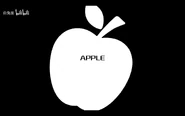

Game: Heta Anthropic Reincarnation (黑塔人类纪行)
Ending Track: APPLE
Next: 1.WISHES
0.APPLE is the first chapter in Heta Anthropic Reincarnation (黑塔人类纪行).
Warning: the following contains spoilers. Click [Expand] on the right to read.
China, Russia, England, France, Germany, Japan and Italy were invited by America to come to a villa in the forest. After a wonderful vacation, before everyone left, America proposed a game called "Killer VS Smiler". In the game, the "Killer" with a knife carving on has to choose someone to "execute" until they successfully execute the "Smiler", while the "Smiler" with a smile carving has to wait for the "Killer's" execution. The others whose wooden sticks have no pictures have nothing to do. France asked if the "Smiler" and others had any ways to go against the "Killer" and got a negative answer.
The order in which the countries drew their sticks is: China, Russia, England, Germany, France, Italy and Japan. The last, extra wooden stick was kept by America. During the draw, France and Italy exchanged wooden sticks.
England draws the "Killer". After all of the players went back to their room, the judge, America, goes to England's room and asked who he would decide to "execute". England guesses all the players but gets a negative answer. America claims that he just realized the last stick he collected was the one with a smile carving. He gives an apple to England as the winner's prize. England decides to leave. America sees him out but stops a distance away from the villa. England asked if America would go back with him, and America replies that he still has some things to do.